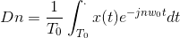
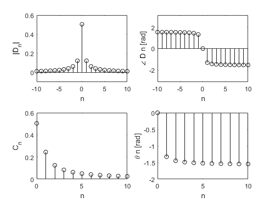

Práctica 5: Series de Fourier en tiempo continuo
- Cruz Meneses Jorge Angel
- González Jiménez Daniel
- Lazcano Saavedra Miguel Salomón
- Rivera Ortiz Raúl Alejandro
Contents
Objetivos
- Realizar gráficas de series de Fourier exponenciales y trigonométricas en tiempo continuo
- Manipulación de instrucciones en MATLAB
- Calculo númerico de los coeficientes de Fourier
Introducción
Aproximación númerica de los coeficientes de Fourier exponencial compleja.
Podemos calcular Dn numéricamente usando la transformada discreta de Fourier, que usa las muestras una señal periódica x (t) durante un período. El intervalo de muestreo es T segundos. Por lo tanto, hay N0 = T0 / T número de muestras en un período T0. Para encontrar la relación entre Dn y las muestras de x (t), considerando la siguiente ecuación.
Por lo tanto tenemos que :

Donde x (kT) es la k'ésima muestra de x (t) y :
En la práctica, es imposible hacer que T ? 0 al calcular el lado derecho de la ecuación.
Podemos hacer que T sea pequeño, pero no cero, lo que podemos hacer es que los datos aumenten sin límite. Por lo tanto, ignoraremos el límite de T en la ecuación.
con la comprensión implícita de que T es razonablemente pequeño.
T distinto de cero dará como resultado algún error computacional, que es inevitable en cualquier evaluación numérica de una integral. El error resultante de T distinto de cero se denomina error de alias
Por lo tanto ignorando el limite de la ecuacion tendriamos:
Ahora, de la ecuación:
tenemos que:

Y de la ecuacion anterior se deduce que:

Podemos usar la la transformada rápida de Fourier para calcular el lado derecho de la ecuación. Aunque sabemos que exisen diferentes metodos numericos para poder llegar a ella. Para poder utilizar la FFT necesitamos muestras de x (t) durante un período que comience en t = 0. En este algoritmo, también es preferible (aunque no necesario) que N0 sea una potencia de 2, es decir N0 = 2m, donde m es un número entero.
Para poder mostrar el funcionamiento FFT calcularemos numéricamente y luego se graficará los espectros de Fourier trigonométricos y exponenciales para la señal periódica del ejemplo 6.1.
Las muestras de x (t) comienzan en t = 0 y la última muestra (N0) está en t = T0 - T. En los puntos de discontinuidad, el valor de la muestra se toma como el promedio de los valores de la función en ambos lados de la discontinuidad. Para determinar N0, requerimos que Dn para n ? N0 / 2 sea insignificante. Debido a que x (t) tiene una discontinuidad de salto, Dn decae lentamente a medida que 1 / n. Por lo tanto, elegir N0 = 200 es aceptable porque el armónico (N0 / 2) nd (100) es aproximadamente el 1% del fundamental. Arrojandonos un resultado certero. Sin embargo se pide, aunque no se obliga que n0 sea una potencia de 2, por lo que podriamos sugerir que N0=256.
Primero se declaran los parametros a ocupar.
T_0 = pi; N_0 = 256; T = T_0/N_0; t = (0:T:T*(N_0-1))'; M = 10; x = exp(-t/2); x(1) = (exp(-pi/2) + 1)/2;
Posteriormente la funcion fft se utiliza para aproximar los espectros de fourier en un rango de -m<n<m.
D_n = fft (x)/N_0; n = [-N_0/2:N_0/2-1]'; clf; subplot (2, 2, 1); stem(n, abs(fftshift (D_n)),'k'); axis ([-M M -.1 .6]); xlabel('n'); ylabel('|D_n|'); subplot (2, 2, 2); stem(n, angle(fftshift(D_n)),'k'); axis([-M M -pi pi]); xlabel ('n'); ylabel('\angle D n [rad]');
Y por ultimo se aproximan los espectros trigonometricos de fourier en un rango de 0<n<m.
n = [0:M]; C_n(1) = abs(D_n(1)); C_n(2:M+1) = 2*abs (D_n(2:M+1)); theta_n(1) = angle(D_n(1)); theta_n(2:M+1) = angle(D_n(2:M+1)); subplot (2, 2, 3); stem(n,C_n,'k'); xlabel ('n'); ylabel('C_n'); subplot (2, 2, 4); stem(n,theta_n,'k'); xlabel ('n'); ylabel('\theta n [rad]');
Ejemplo 6.1
Con serie y espectro trigonometrico, no es necesario entregar el código, solo la aplicacion al problema especifico, debe de indicar la función y los valores de sus coeficientes (sin incluir el procedimiento).
Declaramos las variables asi como las funciones a utilizar. No se declaran armonicos, esos se ingresan directo a la función.
syms n t t0=0; tf=pi; a0=0.504; an=@(n) 0.504*(2/(1+16*n^2)); bn=@(n) 0.504*((8*n)/(1+16*n^2)); f=@(t) exp(-t/2); a=-(3)*pi; b=(3)*pi;
Calculamos con 4 armonicos.
sft(t0,tf,an,bn,a0,f,4,a,b,1);
Calculamos con 15 armonicos.
sft(t0,tf,an,bn,a0,f,15,a,b,2);
%
Ejemplo 6.2
Con serie y espectro exponencial y A=3, no es necesario entregar el código, solo la aplicación al problema especifico, debe de indicar la función y los valores de sus coeficientes (sin incluir el procedimiento).
Declaramos las variables asi como las funciones a utilizar. No se declaran armonicos, esos se ingresan directo a la función.
syms n t A=3; t0=-0.5; tf=1.5; d0=0; dn=@(n) -((((8*A)/((n^2)*(pi^2)))*sin((n*pi)/2))/2)*j; f=@(t) 2*A*t.*(t>-0.5 & t<=0.5)+2*A*(1-t).*(t>0.5 & t<1.5); a=-6; b=6;
Calculamos con 4 armonicos.
sfe(t0,tf,dn,d0,f,4,a,b,3);
Calculamos con 15 armonicos.
sfe(t0,tf,dn,d0,f,15,a,b,4);
%
Ejemplo 6.4
Con serie y espectro exponencial, no es necesario entregar el código, solo la aplicación al problema especifico, debe de indicar la función y los valores de sus coeficientes (sin incluir el procedimiento).
Declaramos las variables asi como las funciones a utilizar. No se declaran armonicos, esos se ingresan directo a la función.
syms n t t0=-pi; tf=pi; d0=1/2; dn=@(n) (((2/(n*pi))*sin((n*pi)/2))/2-(0/2)*j); f=@(t) 1.*(t>=-0.5*pi & t<=0.5*pi)+0.*(t>0.5*pi & t<1*pi)++0.*(t>-1*pi & t<-0.5*pi); a=-5*pi; b=5*pi;
Calculamos con 4 armonicos.
sfe(t0,tf,dn,d0,f,4,a,b,5);
Calculamos con 15 armonicos.
sfe(t0,tf,dn,d0,f,15,a,b,6);
%
Ejemplo 6.5
Con serie y espectro exponencial, no es necesario entregar el código, solo la aplicación al problema especifico, debe de indicar la función y los valores de sus coeficientes (sin incluir el procedimiento).
Declaramos las variables asi como las funciones a utilizar. No se declaran armonicos, esos se ingresan directo a la función.
syms n t t0=0; tf=pi; d0=0.504; dn=@(n) ((0.504*(2/(1+16*n^2)))/2)-((0.504*((8*n)/(1+16*n^2)))/2)*j; f=@(t) exp(-t/2); a=-(3)*pi; b=(3)*pi;
Calculamos con 4 armonicos.
sfe(t0,tf,dn,d0,f,4,a,b,7);
Calculamos con 15 armonicos.
sfe(t0,tf,dn,d0,f,15,a,b,8);
%
Ejemplo 6.7
Con serie y espectro exponencial y sin incluir la gráfica de f, error ni energía del error, no es necesario entregar el código, solo la aplicación al problema especifico, debe de indicar la función y los valores de sus coeficientes (sin incluir el procedimiento)
clf; d0=1/3; dn=@(n) 1/3; t0=-3/2; tf=3/2; a=-7; b=7;
Calculamos con 4 armonicos.
sfe7(t0,tf,dn,d0,4,a,b,9)
%
Calculamos con 15 armonicos.
sfe7(t0,tf,dn,d0,15,a,b,10)
%
Ejercicio 7
- Elabore un código que implemente el algoritmo de trapecio compuesto para , Utilice este código para aproximar del ejemplo de la práctica. Ahora implemente el código COMPUTER EXAMPLE C6.4 que se encuentra al final de la sección 6.6 de Lathi, y calcule nuevamente el los coeficientes del ejemplo propuesto. Muestre una tabla que contenga los coeficientes mencionados calculados con los dos algoritmos y de forma exacta, ¿Qué algortmo aproxima mejor a los coeficientes?, para esto compare los coefientes con el valor absoluto de la resta.
clear all syms n t format SHORTG
Funcion de los analíticos dada por el documento de la práctica:
dn=@(n) 0.504/(1+4*n*j);
Calculo de los Dn con trapecio: Sabemos que
En este caso tendremos:
NOTA: La función del cálculo por el método del trapecio compuesto estará al final de este ejercicio.
T0=pi; w0 = 2*pi/T0; f1=@(t) exp(-t/2)*cos(n*w0*t); f2=@(t) exp(-t/2)*sin(n*w0*t);
Calculamos los del trapecio con 15 trapecios:
dntrap = (1/T0)*trapecio(f1,0,T0,15)-(i/T0)*trapecio(f2,0,T0,15); dntrap =matlabFunction(dntrap);
COMPUTER EXAMPLE C6.4
T_0 = pi; N_0 = 256; T = T_0/N_0; t = (0:T:T*(N_0-1))'; M = 10; x = exp(-t/2); x(1) = (exp(-pi/2) + 1)/2; D_n = fft (x)/N_0; n = [-N_0/2:N_0/2-1]'; clf; %subplot (2, 2, 1); %stem(n, abs(fftshift (D_n)),'k'); %axis ([-M M -.1 .6]); %xlabel('n'); %ylabel('|D_n|'); %subplot (2, 2, 2); %stem(n, angle(fftshift(D_n)),'k'); %axis([-M M -pi pi]); %xlabel ('n'); %ylabel('\angle D n [rad]'); n = [0:M]; C_n(1) = abs(D_n(1)); C_n(2:M+1) = 2*abs (D_n(2:M+1)); theta_n(1) = angle(D_n(1)); theta_n(2:M+1) = angle(D_n(2:M+1)); %subplot (2, 2, 3); %stem(n,C_n,'k'); %xlabel ('n'); ylabel('C_n'); %subplot (2, 2, 4); %stem(n,theta_n,'k'); %xlabel ('n'); %ylabel('\theta n [rad]');

Llenamos los datos
Dns = [0;1;2;3;4];
Trapecio = {dntrap(0);dntrap(1);dntrap(2);dntrap(3);dntrap(4)};
Lathi = {D_n(1);D_n(2);D_n(3);D_n(4);D_n(5)};
Analitico={dn(0);dn(1);dn(2);dn(3);dn(4)};
%Error Analitico vs Lathi
ErrorLvsA={abs(dn(0)-D_n(1));abs(dn(1)-D_n(2));abs(dn(2)-D_n(3));abs(dn(3)-D_n(4));abs(dn(4)-D_n(5))};
%Error Analiticos vs Trapecio
ErrorTvsA ={abs(dn(0)-dntrap(0));abs(dn(1)-dntrap(1));abs(dn(2)-dntrap(2));abs(dn(3)-dntrap(3));abs(dn(4)-dntrap(4))};
Imprimimos la Tabla solicitada:
T = table(Dns,Analitico,Trapecio,Lathi,ErrorLvsA,ErrorTvsA)
T =
5×6 table
Dns Analitico Trapecio Lathi ErrorLvsA ErrorTvsA
___ _________________________ _________________________ _________________________ ____________ ____________
0 [ 0.504] [ 0.50474] [ 0.50428] [0.00028111] [0.00074028]
1 [ 0.029647 - 0.11859i] [ 0.030128 - 0.11681i] [ 0.029665 - 0.11865i] [6.2114e-05] [ 0.0018458]
2 [0.0077538 - 0.062031i] [0.0082355 - 0.058337i] [0.0077597 - 0.062053i] [2.2527e-05] [ 0.0037253]
3 [0.0034759 - 0.04171i] [0.0039773 - 0.036056i] [0.0034794 - 0.041714i] [ 5.432e-06] [ 0.0056769]
4 [0.0019611 - 0.031377i] [0.0024955 - 0.023657i] [0.0019638 - 0.03137i] [8.3546e-06] [ 0.0077392]
Como se puede observar,la aproximación realizada por Lathi se acerca mucho más al resultado analítico, que el método del trapecio compuesto con 15 trapecios.
Apendice
Funcion usada para las series de Forurier trigonometricas.
function sft(t0,tf,an,bn,a0,f,armo,a,b,fig) % t0 el valor inicial para calcular la serie % tf el valor final donde calcular la serie % an función de la fórmula de los an % bn función de la fórmula de los bn % f función original % armo número de armonicos a utilizar en la gráfica % a, b intevalo para realizar la grafica de la serie % fig para que no se me encimen las graficas en una sola figura w0=2*pi/(tf-t0); sf=a0; t=a:0.0001:b; for n=1:armo sf=sf+an(n)*cos(n*w0*t)+bn(n)*sin(n*w0*t); end figure (fig) hFig = figure(fig); set(hFig, 'Position', [0 0 900 900]) subplot(3,2,1) plot(t,sf,'LineWidth',2) grid on legend('Serie de Fourier','Location','Best') xlabel('t','FontWeight','bold','FontSize',16) sf=a0; t1=t0:0.0001:tf; for n=1:armo sf=sf+an(n)*cos(n*w0*t1)+bn(n)*sin(n*w0*t1); end subplot(3,2,2) plot(t1,f(t1),'r','LineWidth',2) grid on hold on plot(t1,sf,'LineWidth',2) legend('Función original','Serie de Fourier ','Location','Best') xlabel('t','FontWeight','bold','FontSize',16) nn=-armo:armo; axis auto subplot(3,2,4) e=f(t1)-sf; plot(t1,e,'LineWidth',2) title('Error','FontWeight','bold','FontSize',16) xlabel('t','FontWeight','bold','FontSize',16) axis auto grid on subplot(3,2,6) e=f(t1)-sf; area(t1,e.^2) legend('Energia del error','Location','Best') xlabel('t','FontWeight','bold','FontSize',16) axis auto grid on absanbn=zeros(1,length(nn)); angle=zeros(1,length(nn)); cont=1; for i =-armo:armo if i==0 absanbn(cont)=a0; angle(cont)=atan2(0, a0); else absanbn(cont)=sqrt(an(i)^2+bn(i)^2); angle(cont)=atan2(-bn(i),an(i)); end cont=cont+1; end subplot(3,2,3) stem(w0*nn,abs(absanbn),'LineWidth',2) title('Espectro de magnitud D_n ','FontWeight','bold','FontSize',16) xlabel('\omega','FontWeight','bold','FontSize',16) grid on subplot(3,2,5) % % stem(w0*nn,angle,'LineWidth',2) % % title('Espectro de fase, \angle de D_n ','FontWeight','bold','FontSize',16) % % xlabel('\omega','FontWeight','bold','FontSize',16) grid on end
Funcion usada para las series de Fourier exponenciales.
function sfe(t0,tf,dn,d0,f,armo,a,b,fig) % t0 el valor inicial para calcular la serie % tf el valor final donde calcular la serie % dn función de la fórmula de los dn % f función original % armo número de armonicos a utilizar en la gráfica % a, b intevalo para realizar la grafica de la serie % fig para que no se me encimen las graficas en una sola figura w0=2*pi/(tf-t0); sf=d0; t=a:0.0001:b; for n=1:armo sf=sf+dn(-n)*exp(w0*-n*t*j)+dn(n)*exp(w0*n*t*j); end figure (fig) hFig = figure(fig); set(hFig, 'Position', [0 0 900 900]) subplot(3,2,1) plot(t,sf,'LineWidth',2) grid on legend('Serie de Fourier','Location','Best') xlabel('t','FontWeight','bold','FontSize',16) sf=d0; t1=t0:0.0001:tf; for n=1:armo sf=sf+dn(-n)*exp(w0*-n*t1*j)+dn(n)*exp(w0*n*t1*j); end subplot(3,2,2) plot(t1,f(t1),'r','LineWidth',2) grid on hold on plot(t1,sf,'LineWidth',2) legend('Función original','Serie de Fourier ','Location','Best') xlabel('t','FontWeight','bold','FontSize',16) nn=-armo:armo; axis auto subplot(3,2,4) e=f(t1)-sf; plot(t1,e,'LineWidth',2) title('Error','FontWeight','bold','FontSize',16) xlabel('t','FontWeight','bold','FontSize',16) axis auto grid on subplot(3,2,6) e=f(t1)-sf; area(t1,e.^2) legend('Energia del error','Location','Best') xlabel('t','FontWeight','bold','FontSize',16) axis auto grid on absdn=zeros(1,length(nn)); cont=1; for i =-armo:armo if i==0 absdn(cont)=d0; end if i~=0 absdn(cont)=2*dn(i); end cont=cont+1; end subplot(3,2,3) stem(w0*nn,abs(absdn),'LineWidth',2) title('Espectro de magnitud D_n ','FontWeight','bold','FontSize',16) xlabel('\omega','FontWeight','bold','FontSize',16) grid on subplot(3,2,5) % % stem(w0*nn,angle(absdn),'LineWidth',2) % % title('Espectro de fase, \angle de D_n ','FontWeight','bold','FontSize',16) % % xlabel('\omega','FontWeight','bold','FontSize',16) grid on end
Función del cálculo por el método del trapecio compuesto
function [int]=trapecio(fun,a,b,m) f = fun; h = (b-a)/m; t = a:h:b; int = 0; for i=1:m int = int+f(t(i))+f(t(i+1)); end int = (h/2)*int; end